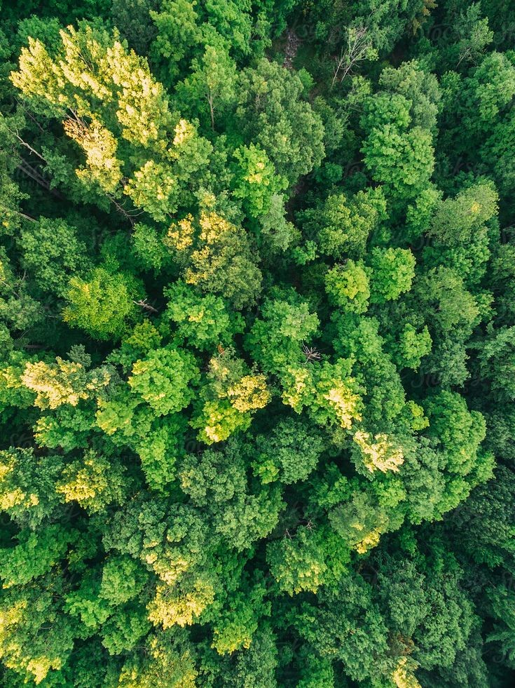

Automating tree counting with AI can be more cost-effective than manual methods, especially for large-scale projects.
Accurate tree counting helps in monitoring deforestation, afforestation, and forest health over time.
Governments, environmental agencies, and forestry companies can use AI-powered tree counting to make informed decisions about resource allocation, land use planning, and conservation strategies.